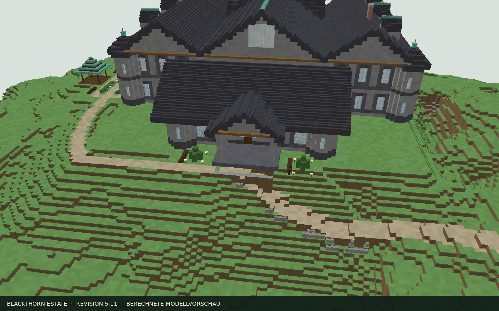
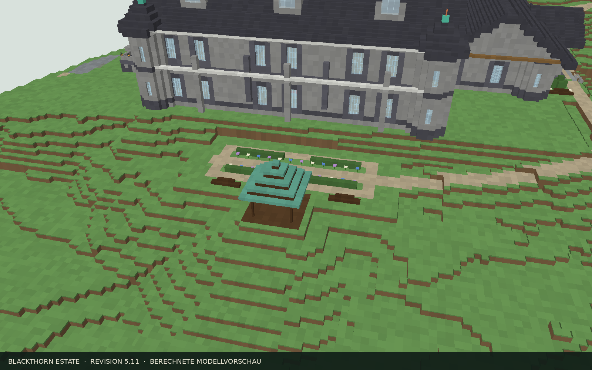

Die nächste Schicht
Eine Welt-Höhe auswählen, Blöcke nachschlagen und gesetzte Positionen abhaken.
Erkundet das Anwesen, wählt eure Bauhöhe und plant gemeinsam Material und Fortschritt.
 Poolseite · Blick nach Osten
Poolseite · Blick nach OstenEine Welt-Höhe auswählen, Blöcke nachschlagen und gesetzte Positionen abhaken.
Original und Ziel vergleichen. Abtrag und Auffüllung mit genauen Koordinaten lesen.
Zuständigkeiten und Fortschritt festhalten. Einen vollständigen Stand als Backup sichern.
Die Höhen und Raumbezüge sind aus den tatsächlichen Blockkoordinaten abgeleitet. Blockzahlen beschreiben gesetzte Blöcke, nicht die Raumfläche.
6.203 Baupositionen · 12 Raumbezüge
7.102 Baupositionen · 4 Raumbezüge
6.645 Baupositionen · 13 Raumbezüge
11.095 Baupositionen · 13 Raumbezüge
12.569 Baupositionen · 9 Raumbezüge
15.568 Baupositionen · 0 Raumbezüge
Die Kellertreppe und Haupttreppe liegen 29 Blöcke auseinander (22 Blöcke zwischen den nächsten X-Kanten). Der statische Kopfraum-Scan findet keine Belegung in den drei Blockebenen über den Treppen. Das ersetzt keinen Ingame-Lauftest.
Regal-, Bulk- und Kupfergolem-Lager liegen über Keller 1 und 2 verteilt.
Technikstollen: X −715…−659 · Y 80…103 · Z 770…796 (57 × 24 × 27). Wartungsspalt X −688…−686. Schachtachse bei X -687 / Z 790; Der Leiter-Wartungsschacht ist von Y 106 bis 132 mit westlichen Zugangstüren auf K3, K2, K1 und EG gebaut. Der Boden Y 105 bleibt geschlossen. Die Verlängerung zum Technikstollen und der automatische Itemlift stehen aus.
Koordinaten als CSV →Geeignete Steintreppen: 1 Vollblock → 1 Treppe. Werkbank: 6 Vollblöcke → 4 Treppen. Holztreppen werden an der Werkbank hergestellt. Steinplatten ergeben bei beiden Verfahren 2 Stück je Vollblock.
Die bisherigen Licht- und Erreichbarkeitswerte stammen aus älteren Revisionen. Eine aktuelle Lichtsimulation und der Ingame-Lauftest stehen aus.
Erdgeschoss und Obergeschoss umfassen bereits jeweils acht Y-Ebenen. Ihre Höhe muss nicht pauschal vergrößert werden. Goldene Teppichsegmente auf Z 790 weisen zur Haupttreppe; am Wartungsschacht führt der Weg außen herum. Eine Bündelung der Lagertechnik bleibt als eigener Grundrissumbau offen; die Höhen und aktuellen Übergänge sind hier ausgewiesen.
Die Eingangsseite liegt westlich bei X −743…−734. Pool und Klippenpanorama liegen östlich bei X −657…−631.
Blocknummern gelten für Revision 5.17. Häkchen werden anhand der Weltkoordinaten gespeichert. Das vollständige Backup unter „Bauplan“ enthält auch diesen Blockstatus; ältere nummernbasierte Stände werden nicht automatisch übernommen.
| Nr. | X | Y | Z | Minecraft-Block | Bauteil | Status |
|---|
Bodenleuchten aus Durchgängen entfernt, kurze Deckenaufhängungen ergänzt. Originale Kronleuchter und Terrassenleuchten bleiben erhalten.
| Leuchte | Bereich | Weltkoordinate | Montage / Träger | Ansehen |
|---|
Die alte automatische Verteilung stellte viele Leuchten in begehbare Bodenebenen. Diese Positionen und ungenutzte Ketten wurden entfernt. Neue, sparsam gesetzte Deckenleuchten haben höchstens zwei Kettenblöcke. Metallrahmen, Bügel und warmes bzw. blaues Licht werden getrennt gezeichnet; die Seitenansicht im Ebenenplan sitzt ebenfalls auf der richtigen Höhe.
Die Leuchtenliste führt jede vorhandene Laterne mit tatsächlicher Position und Träger auf. „3D“ öffnet eine isolierte Detailansicht mit Leuchte, Kette und Träger. „Ganzes Haus“ kehrt zur Gesamtansicht zurück.
Wähle ein Modell und lade es bei Bedarf mit den originalen Minecraft-Blocktexturen. Die Lager-Litematics enthalten ihre Golems, Container und Blockdaten.
Der externe Viewer lädt seine Minecraft-Grafiken über das Internet. Beim Öffnen wird nur das gewählte Modell an structure-viewer.ewanhowell.com übergeben.
Das Hausmodell enthält Blocktypen und Blockstates. Die beiden Lager-Vorlagen werden als originale Litematic-Dateien geladen und bewahren dadurch ihre Kupfergolems, Truhen, Hopper und Blockentity-Daten. Der Einbauvorschlag ist separat dokumentiert; die Module sind noch nicht in den Haus-Bauplan oder dessen Aushub integriert.
Vergleicht den Weltstand mit der Planung. Klickt eine Spalte an: Die Arbeitsschritte und das Höhenprofil bleiben daneben sichtbar.
AbtragAuffüllungBeides in derselben SpalteOberfläche gestalten

Freie Zufahrt, zwei Formschnittinseln, weiße Blüten und zwei Holzbänke.

Kiesrundweg, niedrige Hecken, Blütenbeete, Bänke und ein offener Holzpavillon mit Kupferhaube.
Die Summen enthalten sämtliche Einzelpositionen der Abtrags- und Auffülllisten. Auffüllblöcke sind bereits im Baumaterial enthalten. Der Austausch einer Steinoberfläche gegen Erde/Gras benötigt zusätzlich die aufgeführten Baublöcke.
| Chunk X / Z | Weltbereich | Spalten | Abtrag | Auffüllung | Karte |
|---|
281 × 221 vermessene Säulen aus dem gelieferten Weltstand. Die östliche Schlucht bleibt offen; tragende Poolstützen bleiben sichtbar. Die Karte ist eine Höhenfläche, keine Höhlen- oder vollständige Ingame-Simulation.
50 Regallagerbuchten und sechs Privatreserven. Kategorien durchsuchen, Bestände notieren und die Position im Ebenenplan öffnen.
| Bucht | Kategorie / Bereich | Kapazität | Notiz / tatsächlicher Bestand | Position |
|---|
Paper 26.3 · Technikentwurf und originale Copper-Golem-Module. Anschlüsse und Redstone-Abnahme im Spiel stehen noch aus.
4.919 Blöcke · 27 × 24 × 27 · 56 Entities · 1.104 Blockentities
Vorschlagsanker X -715 · Y 80 · Z 770 · ohne Drehung
cherry_slab547cherry_planks529chest488dirt476hopper381tuff_brick_slab336cherry_log237glass187tuff_bricks183tuff_slab180polished_tuff_slab146comparator123white_terracotta110tuff_brick_stairs90Alle 58 Blocksorten stehen in der Litematic; vollständige Vorlage herunterladen.
4.543 Blöcke · 27 × 22 × 27 · 60 Entities · 1.092 Blockentities
Vorschlagsanker X -685 · Y 82 · Z 770 · ohne Drehung
white_stained_glass1.884chest488oxidized_copper479hopper383waxed_cut_copper_slab374white_concrete190comparator124observer88waxed_copper_block78redstone_wire75waxed_copper_bulb73dropper46vine44acacia_shelf36Alle 42 Blocksorten stehen in der Litematic; vollständige Vorlage herunterladen.
Die kombinierte Grundfläche ist X -715…-659, Z 770…796 (57 × 27) bei Y 80…103 (24 hoch). Der 3 Blöcke breite Wartungsspalt liegt bei X -688…-686; die vorgeschlagene Schachtachse liegt bei X -687 / Z 790. Diese Grube und die Verbindung der Itemwege sind noch nicht Teil der Bau-Blockliste; die Vorschlagskoordinaten stehen in lagertechnik_platzierung.csv.
Die Schaltungen stammen aus den Original-Litematics von cubicmetre. Sie werden im Viewer unverändert gezeigt; Verknüpfung mit Einwurf, Bulk-Lager und Shulker-Ausgabe bleibt vor dem Einbau im Spiel zu prüfen.
Pro Material bleibt ein Fass mit bis zu 27 Stacks losem Vorrat verfügbar. Der Überlauf wird aus der Zuleitung entnommen – nicht aus dem Vorratsfass. Volle Shulker fallen über eine Hopper-Säule in drei darunter liegende Fässer: zusammen 81 Boxplätze je Material.
Fehlende Leerboxen oder ein voller Ausgang müssen die Zufuhr sperren. Der Packzyklus lautet: Füllen → Zufuhr sperren → volle Box brechen → Aufnahme bestätigen → Leerbox setzen → weiterfüllen.
Alle neun Zieltruhen werden mit passenden Itemtypen vorbestückt. Andere Typen fallen nicht automatisch unter eine Kategorie. Mindestens ein Seed-Item pro gewünschtem Typ erhalten; keine leere Catch-all-Truhe in den Raum stellen.
Unbekannte Typen und volle Zieltruhen bleiben ein sichtbarer Klärfall am Kupfer-Eingang. Die Fässer im Regallager bleiben als große manuelle Reserve erhalten.
Der Unloader gibt den Inhalt voller Boxen in dieselbe Sortierstrecke. Die leere Hülle muss getrennt zurückgegeben werden. Der allgemeine Loader erhält einen eigenen Materialvorrat; er verpackt gezielt eingelegte Items und mischt nicht automatisch den gesamten Einwurf.
Frisches Modul, leeres Vorratsfass, keine gespeicherten Boxen. Nur 64er Bulk-Items. Diese Probe prüft Kapazität und Priorität, keine Redstone-Timingeffekte.
Markierung auswählen, um ihre Weltkoordinaten zu sehen.
Die Platzhalter-Shulker im Modell zeigen die aktive Boxposition. Inventare, Villager und Golems werden im Spiel eingerichtet. Das Logikmodell zählt keine Box doppelt und meldet Rückstau. Physische Itemaufnahme, Pulsreihenfolge, Chunk-Neuladen und Paper-Einstellungen müssen separat geprüft werden.
Grundlage für das Golemverhalten: offizielle Minecraft-Regeln. Zielversion: 26.3.
| Material | ID | Anzahl | Verpackt |
|---|
Zahlen sind Items, nicht Blöcke: Türen zählen einmal, Betten einmal, Wasser ist mit 547 Positionen nur in der Blockliste enthalten, nicht in diesen Itemmengen. Treppen, die ihr aus Vollblöcken herstellt, brauchen 6 Blöcke pro 4 Treppen, Stufen 3 Blöcke pro 6 Stufen (Steinsäge: 1 zu 1).
| X | Y | Z | Block | Zustand | Bauteil |
|---|
Die Website funktioniert offline. CSV-Dateien lassen sich in Tabellenprogrammen öffnen; vollständige Fortschritts-Backups findet ihr unter Organisation → Fortschritt.